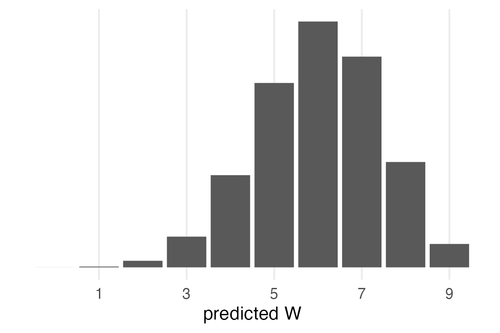
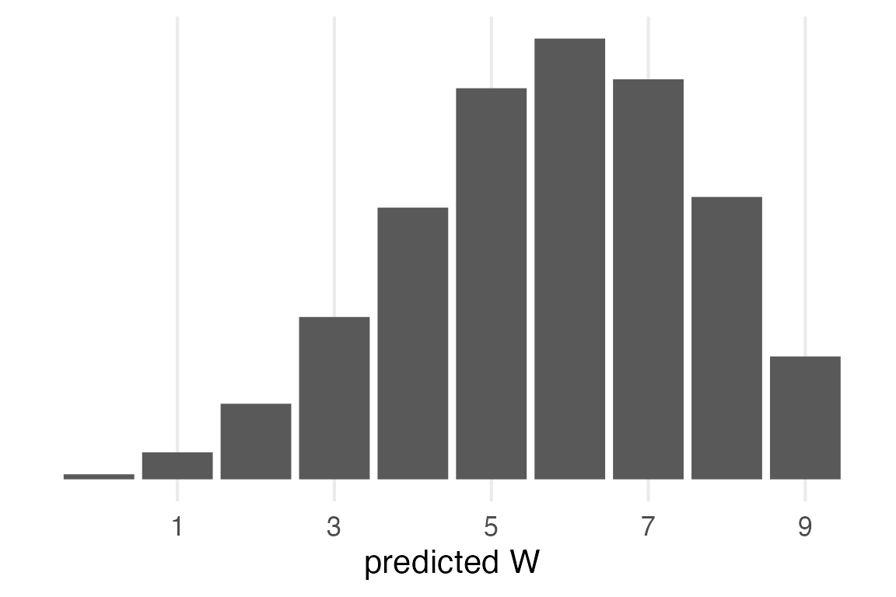
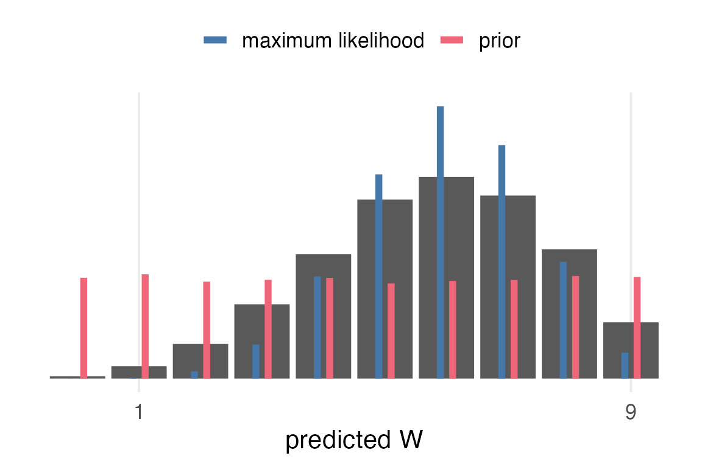
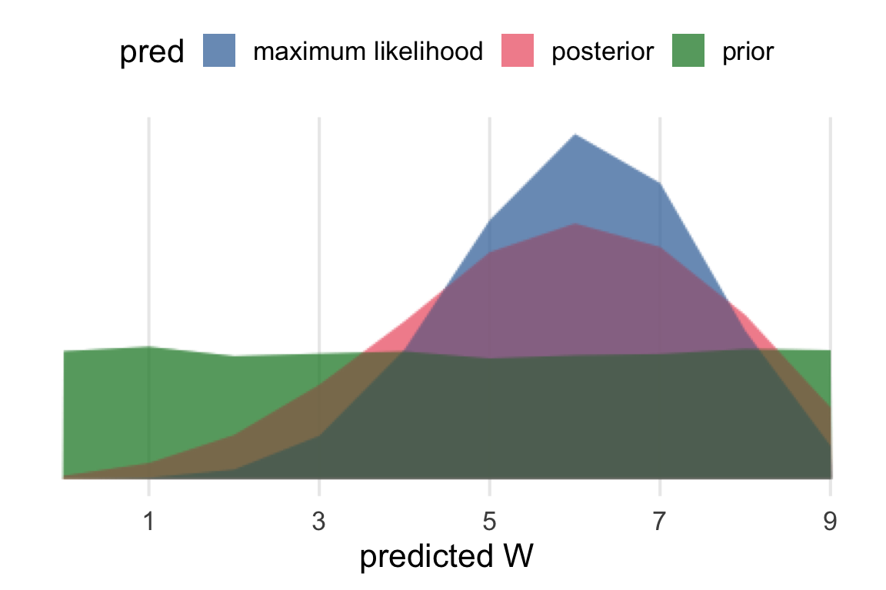
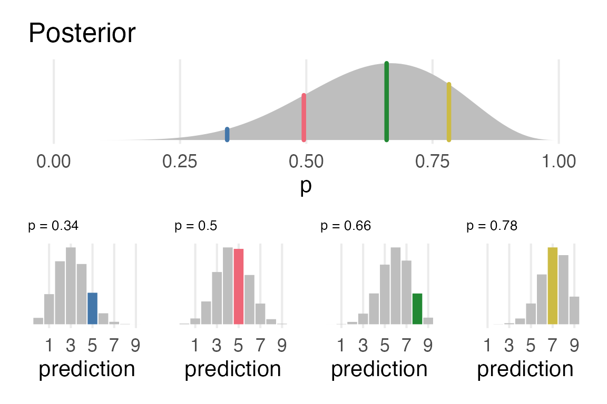

library(tidyverse)
library(ggdist)
library(here)
library(ggblend)
source(here("_defaults.R"))
Listening
One last post to work through different predictive distributions given 6W and 3W.
The prior predictive distribution.
The maximum likelihood.
the posterior predictive distribution.
Loading
Prior predictive
The prior was a Uniform distribution between 0 and 1, or \(\mathcal{U}(0,1)\). The outcome will also be uniform, but I’ll go through all the steps for completeness.
tibble(
p = runif(1e4)
) ->
prior_sampI’ll make use of vectorization of rbinom() to generate possible samples with probabilities in prior_samp$p.
set.seed(2023)
prior_samp |>
mutate(
pred_binom = rbinom(
n(),
size = 9,
prob = p
)
) |>
count(pred_binom) |>
mutate(prob = n/sum(n)) ->
prior_pred- 1
- I’m going straight from generated samples to summarising for the distribution.
prior_pred |>
ggplot(aes(pred_binom, prob))+
geom_col()+
scale_x_continuous(
name = "predicted W",
breaks = seq(1, 9, by = 2)
)+
theme_no_y()- 1
-
I’ve moved
theme_no_y()into_defaults.Rwhich I source at the top.

Maximum Likelihood
The maximum likelihood probability of W is \(\frac{6}{9}=0.6\overline{6}\). We can get predicted values for that probability from binomial distribution.
tibble(
pred_binom = 0:9,
dens = dbinom(
pred_binom,
size = 9,
prob = 6/9
),
prob = dens
) ->
ml_pred
ml_pred |>
ggplot(aes(pred_binom, prob))+
geom_col()+
scale_x_continuous(
name = "predicted W",
breaks = seq(1, 9, by = 2)
)+
theme_no_y()
Posterior Prediction
For the posterior prediction, first we sample probabilities from the beta distribution
\[ p \sim \text{Beta}(W+1, L+1) \]
(a.k.a. dbeta())
Then for each \(p\), we generate predictions from the binomial distribution.
\[ Y|p \sim \text{Bin}(9,p) \]
This chapter has been doing grid sampling, but I’ll just use the rbeta() function for simplicity.
tibble(
p = rbeta(1e4, 6+1, 3+1)
) ->
posterior_sampThen, it’s the same operation as the prior predictive distribution.
posterior_samp |>
mutate(
pred_binom = rbinom(
n(),
size = 9,
prob = p
)
) |>
count(pred_binom) |>
mutate(prob = n/sum(n)) ->
posterior_predposterior_pred |>
ggplot(aes(pred_binom, prob))+
geom_col() +
scale_x_continuous(
name = "predicted W",
breaks = seq(1, 9, by = 2)
) +
theme_no_y()
Comparisons
Now, I want to compare the posterior predictive distribution to the maximum likelihood and the prior. This is one concept I had, which has the prior and the ML values as thinner bars within the posterior predictive bars.
posterior_pred |>
ggplot(aes(pred_binom, prob))+
geom_col()+
geom_segment(
data = ml_pred,
aes(
x = pred_binom-0.1,
xend = pred_binom-0.1,
yend = 0,
color = "maximum likelihood"
),
linewidth = 2
)+
geom_segment(
data = prior_pred,
aes(
x = pred_binom+0.1,
xend = pred_binom+0.1,
yend = 0,
color = "prior"
),
linewidth = 2
)+
scale_x_continuous(
breaks = seq(1, 9, length = 2)
)+
labs(
color = NULL,
x = "predicted W"
)+
theme_no_y()+
theme(
legend.position = "top"
)
Overplotting them is also a possibility, and a good occasion to test out {ggblend}. I had some issues getting this to work with the available graphic devices & quarto.
```{r}
#| dev: "png"
#| dev-args:
#| - type: "cairo"
bind_rows(
posterior_pred |>
mutate(pred = "posterior"),
ml_pred |>
mutate(pred = "maximum likelihood"),
prior_pred |>
mutate(pred = "prior")
) |>
ggplot(aes(pred_binom, prob, fill = pred))+
geom_area(position = "identity", alpha = 0.5) *
(blend("lighten") + blend("darken")) +
scale_x_continuous(
name = "predicted W",
breaks = seq(1, 9, by = 2)
)+
theme_no_y()+
theme(
legend.position = "top"
)
```
Visualizing the posterior prediction process
posterior_samp |>
slice(1:4) |>
mutate(
pred_binom = rbinom(
n(),
size = 9,
prob = p
)
) |>
arrange(
p
) ->
example_sampexample_samp |>
mutate(
dens = dbeta(p, 6+1, 3+1),
n = row_number()
)->
example_samp
tibble(
p = seq(0, 1, length = 100),
dens = dbeta(p, 6+1, 3+1)
) |>
ggplot(aes(p, dens))+
geom_area(fill = "grey") +
geom_segment(
data = example_samp,
aes(
xend = p,
yend = 0,
color = factor(n)
),
linewidth = 1.5,
lineend = "round",
show.legend = F
)+
theme_no_y()+
labs(
title = "Posterior"
)->
posterior_plotThis involved messing around with {rlang} data masking that I still don’t quite follow. Both the p and pred arguments had to be (just once!) prefixed with !!, but not n.
sample_plot_fun <- function(p, pred, n){
this_scale <- as.vector(khroma::color("bright")(4))
tibble(
ws = 0:9,
dens = dbinom(ws, size = 9, prob = !!p)
) |>
ggplot(aes(ws, dens))+
geom_col(
aes(fill = ws == !!pred)
)+
scale_fill_manual(
values = c("grey", this_scale[n]),
guide = "none"
) +
scale_x_continuous(
breaks = seq(1,9, by = 2)
)+
labs(
x = "prediction",
title = str_glue("p = {round(p, digits = 2)}")
) +
theme_no_y()+
theme(
plot.title = element_text(size = 10)
)
}example_samp |>
rowwise() |>
mutate(
plot = list(
sample_plot_fun(p, pred_binom, n)
)
)->
samp_plotslibrary(patchwork)Going to use some patchwork and purr::reduce() fanciness.
posterior_plot/
(samp_plots |>
ungroup() |>
pull(plot) |>
reduce(.f = `+`) +
plot_layout(nrow = 1))
Pretty pleased with this!